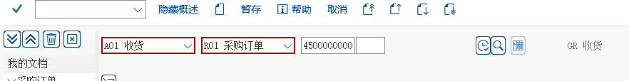
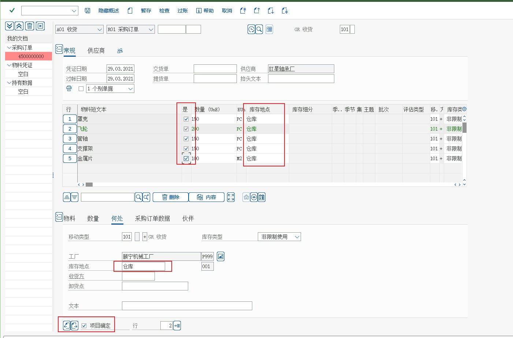
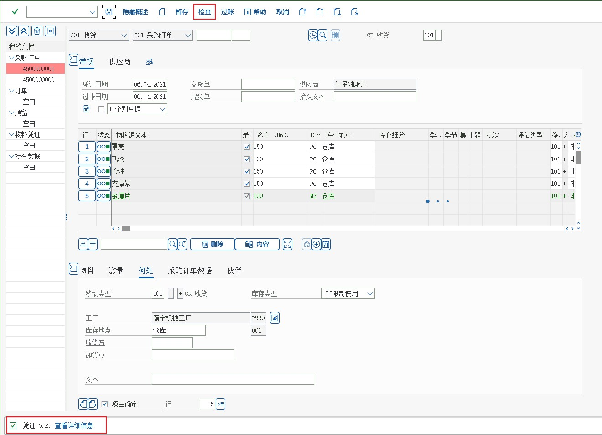

流程② 库存管理
收货 MIGO（101）· 物料凭证与会计凭证 · 移动类型 · MMBE · 盘点
库存管的是「物料在企业内部怎么动」：收货、发货、转储、盘点，而每一次动都由移动类型决定它怎么记账。教材 MM 任务 38（收货 101）与任务 42（MMBE 库存总览）是这一篇的现场。
教学场景
收货过账同时写两张表、生成两类凭证
① 物料凭证（MKPF 抬头 + MSEG 行）：记录物料、数量、工厂、库位、移动类型、批次；库存数量随之变化。
② 会计凭证（BKPF + BSEG）：按自动记账规则（BSX/WRX）生成「借：存货 / 贷：GR/IR 材料采购」。
两张凭证互相有链接 —— 在 MIGO 里看「FI 凭证」，在 MB03 里看物料凭证，在 FB03 里看会计凭证，都能互相跳转。
手顺 收货 MIGO（移动类型 101）
任务 38
创建采购收货
MIGO教学要点教材现场：供应商送货到仓，用 MIGO 按采购订单收货。右上输采购订单号与工厂 → 系统把订单行复制到下方 → 逐行填库存地点（教材画面 001，对应任务 02 建的 0001 仓库）→ 勾选「项目确定」→ 检查 → 保存 → 在「文件信息」页点 FI 凭证查看会计凭证。
IMG 路径（教材后台菜单）后勤 → 物料管理 → 库存管理 → 货物移动 → 收货 → 对采购订单 → 采购订单的 GR（MIGO）
后勤－物料管理－库存管理－货物移动－收货－对采购订单－采购订单的 GR（MIGO）

画面 1教材《S4.docx》· MM 任务 38 创建采购收货 · 原图 01_1_image754.png 
画面 2教材《S4.docx》· MM 任务 38 创建采购收货 · 原图 01_2_image755.png 解释：上一步我们创建了采购订单，现在供应商把货送到了，我们需要办理收货前台
解释：上图就是采购订单收货的屏幕，屏幕右上方输入采购订单号和工厂，屏幕中间是物料凭证的行总揽，屏幕下方是个收货行的明细，屏幕的左方是你自己处理过的采购订单和物料凭证的历史。我们来输入采购订单号
画面 3教材《S4.docx》· MM 任务 38 创建采购收货 · 原图 02_1_image756.png 
画面 4教材《S4.docx》· MM 任务 38 创建采购收货 · 原图 03_1_image757.jpeg 采购订单行的明细被自动复制到了屏幕下方，我们在行项目明细的屏幕中填写相关信息。输入库存地点 001，注意，每一行都要做相同的操作

画面 5教材《S4.docx》· MM 任务 38 创建采购收货 · 原图 04_1_image758.jpeg 勾上项目确定选项（左下角），点击保存按钮，保存之前最好点个检查，看看是否有误

画面 6教材《S4.docx》· MM 任务 38 创建采购收货 · 原图 05_1_image759.jpeg 将屏幕上方的收货改为显示A04，点击回车，然后将标签页切换到文件信息

画面 7教材《S4.docx》· MM 任务 38 创建采购收货 · 原图 06_1_image760.jpeg 在文件信息页，点击 FI 凭证，可以看到凭证的信息

画面 8教材《S4.docx》· MM 任务 38 创建采购收货 · 原图 07_1_image761.png
{kind=link}
{kind=link}
{kind=link}
| MIGO 的操作码 | 含义 | 教材使用 |
|---|---|---|
| A01 | 收货（对采购订单/生产订单） | 任务 38 使用 |
| A02 | 退货（对采购订单） | — |
| A03 | 取消（冲销） | — |
| A04 | 显示（不改数据） | 任务 38 后半段切到 A04 看 FI 凭证 |
| A07 | 发货（领料/销售出库） | PP 任务 43 用 MB1A 261 |
| A08 | 转储（库位/工厂之间） | PP 任务 51 用 MB1B |
库存总览 MMBE
任务 42
显示库存物料
MMBE教学要点MMBE 是回答「这个料还有多少」的标准画面：按工厂/库位/批次展开，分「非限制 / 质检 / 冻结 / 在途 / 已分配」等库存类型看。
IMG 路径（教材后台菜单）后勤 → 物料管理 → 库存管理 → 环境 → 库存 → MMBE → 库存总览
后勤－物料管理－库存管理－环境－库存－MMBE－库存总览

画面 9教材《S4.docx》· MM 任务 42 显示库存物料 · 原图 01_1_image774.png 
画面 10教材《S4.docx》· MM 任务 42 显示库存物料 · 原图 02_1_image775.jpeg 
画面 11教材《S4.docx》· MM 任务 42 显示库存物料 · 原图 03_1_image776.jpeg
| 看什么 | 在哪一行 | 说明 |
|---|---|---|
| 非限制使用库存 Unrestricted | 可用库存 | MRP 与 ATP 用的就是这一列 |
| 质检库存 Quality Inspection | 收货到质检库位时产生 | 质检合格后再转非限制（321） |
| 冻结库存 Blocked | 不可用 | 需要解冻才可用 |
| 订单库存 / 特别库存 | 客户/项目专用 | SD 的 MTO、PS 的项目库存（见 SD 站） |
| 库存总值 | 评估值 | 按工厂（评估范围）的移动平均价或标准价计算 |
移动类型表（教材出现 + 必须知道的）
| 移动类型 | 动作 | 库存影响 | 会计影响（教材科目见任务 28） |
|---|---|---|---|
101 | 采购订单收货 | + 非限制库存 | 借 存货（BSX 12430101 等）/ 贷 GR/IR（WRX 12010101） |
102 | 收货冲销 | − 库存 | 反向凭证 |
103 | 收货到「收货冻结」库存 | 在途/冻结 | 会计上先不记或记 GR/IR 暂存 |
105 | 103 的后续转入 | 转为非限制 | 此时才真正记账 |
201 | 对成本中心发货 | − 库存 | 借 费用（GBB-VBR/VB0） |
261 | 对生产订单发货（领料） | − 库存 | 借 生产成本-原材料消耗（41010101，VBR） |
301 | 工厂间转储（一步） | 此厂减、彼厂增 | 同一公司代码内一般不产生 FI 凭证，但评估价不同会产生 |
311 | 库存地点间转储 | 库位变动 | 不产生 FI 凭证 |
561 | 期初库存导入 | + 库存 | 借 存货 / 贷 期初科目 |
601 | 销售发货（PGI） | − 库存 | 借 主营业务成本 / 贷 存货（SD 站详解） |
怎么查一个移动类型的记账规则用
OBYC 的模拟按钮：输入移动类型、物料、工厂，系统告诉你它会读哪个事务键（BSX/WRX/GBB+科目修改码）；再在 OMJJ 里看这个移动类型允许的字段和是否更新数量/价值。转储与发货（教材未逐屏演示、但项目必用）
| 场景 | T-code | 移动类型 | 注意 |
|---|---|---|---|
| 库位之间转储 | MB1B | 311 | 最简单，不产生 FI 凭证 |
| 工厂之间转储（一步法） | MB1B | 301 | 跨公司代码会产生 FI 凭证（内部购销） |
| 工厂之间转储（两步法） | MB1B / MBST | 303/305 | 先在发出厂做在途，再在接收厂收货 |
| 对成本中心/内部订单发货 | MB1A | 201 | 费用直接进成本中心或订单（CO 站用到） |
| 对生产订单发货 | MB1A / MIGO | 261 | PP 站任务 43 |
| 销售发货（PGI） | VL02N | 601 | SD 站详解 |
盘点（Physical Inventory）
- 创建盘点凭证
MI01（选工厂/库位/物料，冻结账面） - 打印盘点表
MI21（或按行MI04直接录） - 录入盘点结果
MI04（实际数量） - 差异分析
MI20（账面 vs 实盘） - 过账差异
MI07（生成盘点差异凭证，借贷走盘点差异科目） - 查差异清单
MI20/MIS1
盘点差异过账后不可直接改差异凭证同样是物料凭证 + 会计凭证，要修正只能再冲销/调整 —— 所以
MI07 前一定要在 MI20 把差异看清楚。常见错误与排查
| 症状 | 原因 | 处理 |
|---|---|---|
| MIGO 收货报「没有找到采购订单行」 | 订单已删除/已交货完成/工厂不符 | ME23N 看订单状态（ELIKZ）与工厂 |
| 保存报「科目未定义」 | OBYC 里 BSX/GBB 缺该评估类或移动类型的科目 | OBYC 模拟定位缺哪个键，补配（任务 28） |
| 库存数量对不上 | 存在未过账的收货/发货，或选错库位 | MB51 按物料+工厂拉移动清单（含移动类型与库位） |
| 想改已过账的收货 | 物料凭证不能改 | 用 MBST 冲销，再重新收货 |
| 期初库存导不进去 | MM 期间未开（任务 14） | MMPV/后台维护 MM 公司代码期间，逐月开账 |